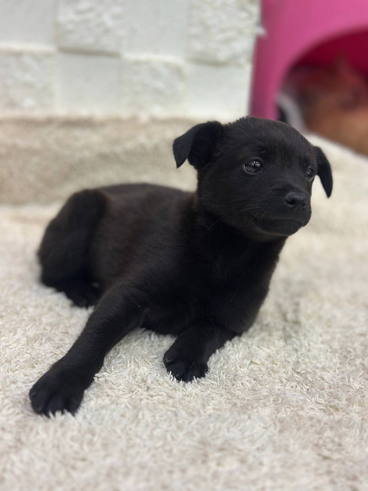
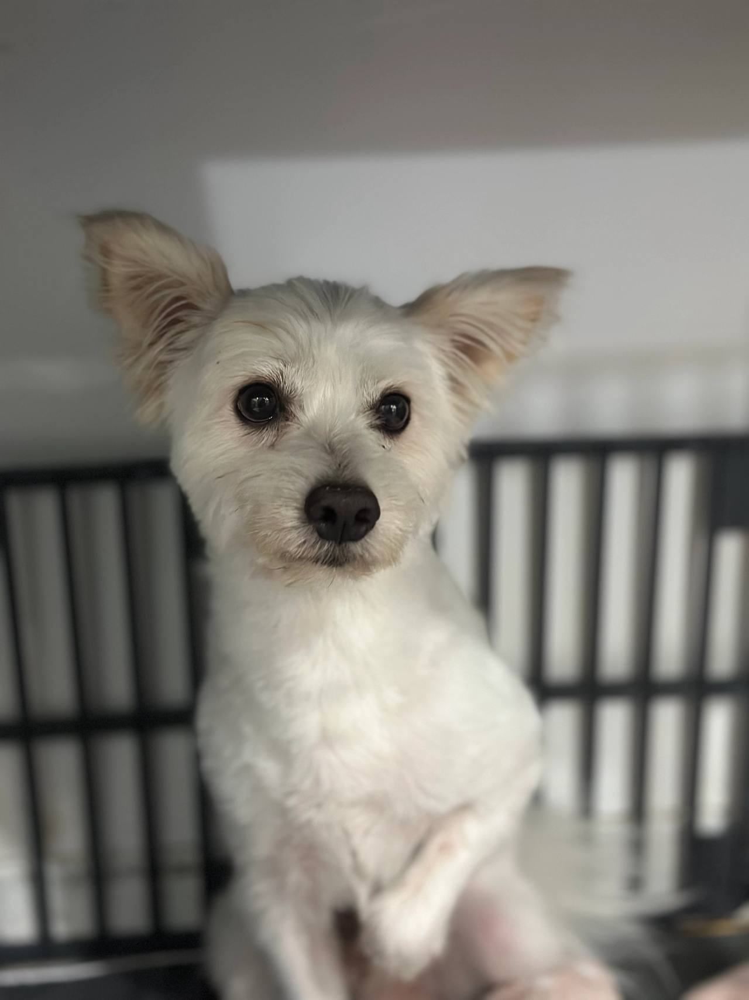
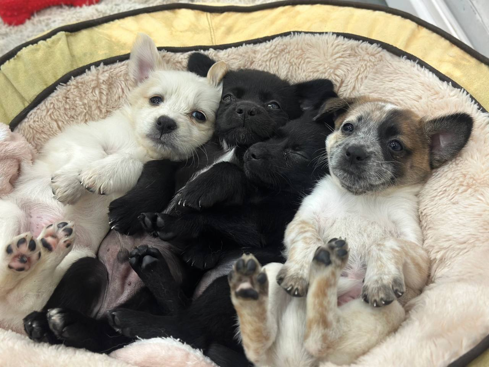
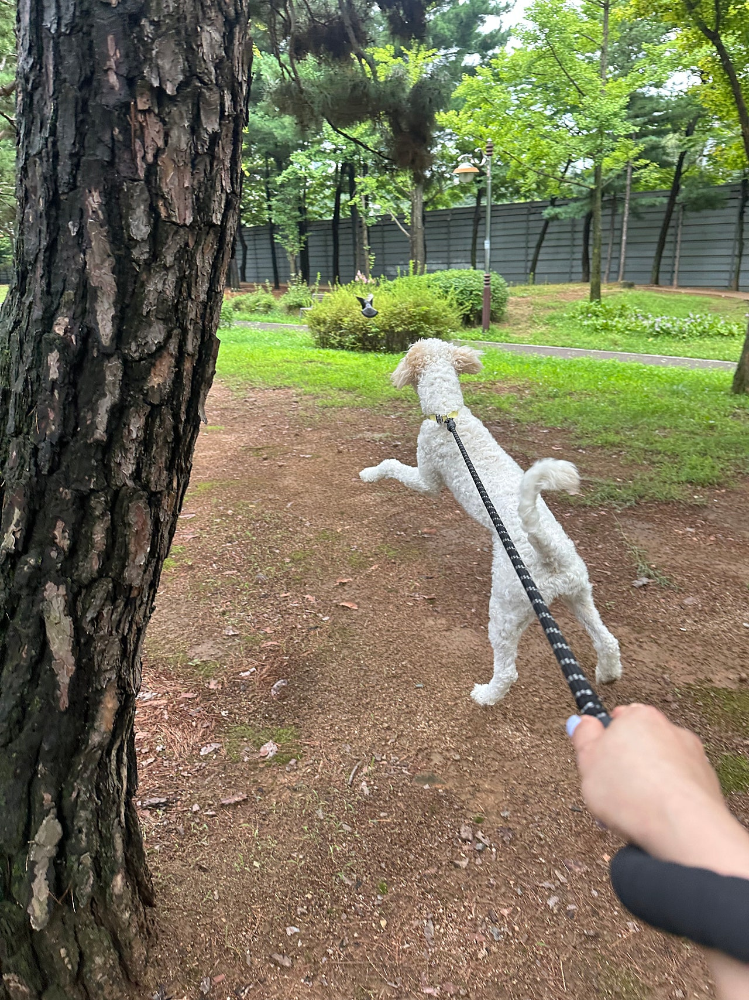
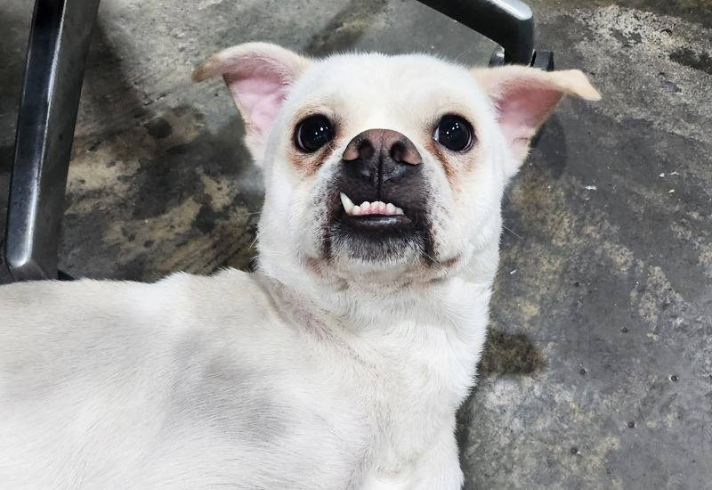

임신, 출산
출산 전후로돌보기 어렵거나아기와 함께 두기불안할 때
LOCAL GUIDE
안전하고 따뜻한 보금자리를 마련해주기 위해 부평유기견센터 정보를 꼼꼼하게 대조해 보는 안목이 중요합니다. 밀폐된 뜬장 구조가 아닌 쾌적한 개별 휴식 공간을 제공하는지 반드시 현장에서 확인해야 합니다. 실내 공실이 마감된 상황에서는 신규 보호 신청을 받지 않으므로 현황 파악이 선행되어야 합니다.
REHOMING
개인적인 사정으로 반려견과 더 이상 함께하기 어려운 상황일 때 체계적인 절차를 거쳐 아이를 입소시키고 무료 분양으로 보금자리를 이어 줍니다. 전화 상담(0505-707-0401)을 통해 현재 상황을 파악하며 무리한 수용 대신 여건에 맞춰 신중하게 돌봄을 시작합니다.
갑작스러운 환경 변화 속에서도 아이가 평온함을 잃지 않도록 세심하게 보살피며 다음 행보를 준비합니다. 이는 책임 있는 보호 속에서 아이에게 새로운 가족을 만날 기회를 열어 주는 과정입니다.
새로운 가족을 찾아 주는 일은아이에게 건넬 수 있는마지막 선물입니다.
출산 전후로돌보기 어렵거나아기와 함께 두기불안할 때

함께 살다동물 알러지가 나타나생활이 어려워졌을 때

해외로 데려갈 수 없거나이사한 집에서함께하기 어려울 때군 입대와 오랜 부재도같은 경우에 가깝습니다.

보호자가 아프거나연로해졌을 때아이도 나이가 들어집에서 돌보기 어려울 때
상담부터 입양 공고까지, 순서는 같습니다.

유선 상담을 통해 나이, 지역, 질병 유무와 특이 상황을 확인합니다. 센터 내부 공간을 종합적으로 살펴본 뒤 1차 입소 가능 여부를 결정합니다.

직접 센터로 방문하시거나 이동 지원 일정을 조율하여 선택합니다. 전국 어디든 전담 인력이 무상으로 픽업하여 이동을 돕습니다.

제반 확인 사항과 규정된 비용 조항을 면밀하게 검토합니다. 안내 내용을 충분히 숙지한 후 정식 입소 동의서를 작성합니다.

건강 상태와 함께 대형견, 소형견, 노령견 여부를 다각도로 살핍니다. 확인된 상태에 맞춰 아이가 안전하게 머물 전용 공간을 정합니다.

안정적인 생활 속에서 아이의 사진과 영상을 정성껏 촬영합니다. 새로운 인연을 맞이할 수 있도록 사전 자료를 차분히 정리합니다.

공식적인 입양 공고를 등록하여 아이의 다음 여정을 이끕니다. 적합한 보금자리를 찾아 새로운 가족과 따뜻하게 연결됩니다.
개별 일과와 성향 점검을 거쳐 생활 적응을 준비하고 있는 강아지 현황입니다.
양육 환경과 반려견의 성향이 부합하는지 점검하는 순서입니다.
주거 형태, 가족 구성원의 동의 여부, 돌봄 시간 등을 유선 상담을 통해 점검합니다.
보호소에 방문하여 개체의 건강 이력과 행동 특성을 확인하고 직접 대면 시간을 가집니다.
지속 양육에 관한 세부 항목을 확인하고 확인 서류를 작성한 뒤 가정을 이룹니다.
산책하고, 밥 먹고, 미용하는 보호소의 하루입니다. 사진을 누르면 그 이야기를 볼 수 있어요.
안내
부평 중심부뿐만 아니라 외곽에서도 아이의 장기적인 안전과 복지를 보장하는 시설을 우선적으로 고려합니다.
전문 인력이 친절하게 답변해 드리는 0505-707-0401 번호를 통해 안정적인 부평유기견센터 이용 절차를 간편히 확인하실 수 있습니다. 남은 보호실이 없을 때는 당일 입소가 차단되므로 반드시 사전에 여유석을 확인해야만 합니다. 통화로 필요한 서류 목록과 방문 절차에 대해 구체적인 가이드를 제공합니다.
보호의 종착역은 안전하고 따뜻한 평생 가정을 다시 만나는 것입니다. 보호된 아이를 입양하고자 하는 분들은 입양 전문 상담 직통 전화인 0505-464-1004로 연결되어 철저한 자격 검증을 거치게 됩니다.
입양 희망자의 주거 안정성, 산책과 케어에 투여할 수 있는 시간, 가족 구성원의 동의 등을 면밀히 심사하여 재파양 없는 평생 반려 생활을 보장하는지 확인하십시오.
보호 시설 이용 시 소요되는 비용은 정형화된 고정 수수료 체계로 획일화할 수 없습니다. 아이의 현재 연령, 지속적인 투약이 필요한 만성 질환의 유무, 대형견 여부, 중성화 시행 여부, 이상 행동 교정 필요성에 따라 머무는 기간 동안 투입되는 보살핌 자원이 완전히 달라지기 때문입니다. 따라서 획일화된 금액이나 비현실적인 무비용 안내는 현실적인 보호 환경을 훼손할 수 있습니다.
정확한 보호 관리 비용은 상담사를 통해 아이의 상세 신체 정보와 특이점을 확인한 뒤 투명하고 합리적인 기준에 맞추어 개별적으로 산정됩니다. 0505-707-0401을 통한 사전 유선 대화에서 모든 항목의 산출 배경을 명확하게 청취할 수 있습니다.
센터 도착 직후 신원 확인과 함께 공식 입소 행정 절차가 진행됩니다. 보호자는 센터의 관리 규정을 숙지하고 정식으로 소유권을 위탁 및 포기하는 서약 문서에 서명 날인합니다. 이는 향후 발생할 수 있는 법적 분쟁을 방지하고 아이의 안정적 입양 권한을 확보하기 위함입니다.
이와 동시에 국가 동물등록 변경에 필요한 식별 번호를 확인합니다. 신분증 사본, 접종 기록 카드, 기존에 섭취하던 사료 및 사용 물품을 담당 간사에게 인계함으로써 공식적인 인도 과정이 마무리됩니다.
센터에 입소한 아이는 곧바로 다른 무리와 섞이지 않고 단독 안심 격리실에서 며칠간 휴식을 취했습니다. 가족과 갑작스럽게 떨어진 아이가 겪을 정서적 충격을 고려하여, 집에서 가져온 익숙한 담요와 장난감을 격리실에 배치해 심리적 안정을 유도했습니다.
전담 케어 담당자는 아이의 체온, 심박, 분변 상태를 매일 체크하고 피부 질환 부위에 처방 연고를 도포하며 세심하게 돌보았습니다. 며칠이 지나자 굳어 있던 아이의 표정이 풀리고 밥그릇을 깨끗이 비우며 새로운 생활 환경에 빠르게 적응해 나갔습니다.
Q: 포털 지도에서 검색되는 지역 지점을 바로 찾아가면 안 되나요? 인터넷상에는 실제 거점 시설이 없으면서 키워드 선점만을 위해 등록된 유령 주소들이 상당수 존재합니다. 이러한 곳에 무작정 방문할 경우 문이 닫혀 있거나 엉뚱한 사무실인 경우가 많아 큰 낭패를 볼 수 있습니다.
A: 또한 실제 시설이라 하더라도 당일 수용 공간이 가득 차 있으면 입소가 불가능합니다. 따라서 전국 통합 창구를 통해 실시간 공실과 격리실 상태를 먼저 파악해야 합니다. 입소 가능 여부를 빠르게 검토받으시려면 0505-707-0401로 문의하여 정확한 배정 절차를 밟으셔야 합니다.
입소 당일에는 행정적 보호권 이전을 위한 공식 서류가 완비되어야 합니다. 또한 급격한 환경 변화 속에서 아이가 느낄 공포심을 줄이기 위해 친숙한 물품을 함께 전달하는 세심한 배려가 요구됩니다.
보호자 신분증과 동물등록 변경 서류는 물론, 아이가 평소 먹던 사료와 애착 인형 등을 누락 없이 챙겼는지 점검표를 확인하십시오. 철저한 준비는 새로운 보금자리에서의 원활한 적응을 돕는 밑거름이 됩니다.
포털 사이트에 특정 구역을 입력해 검색하다 보면 실제로 상주 인력이 없거나 시설이 존재하지 않는 허위 지점 주소들이 노출되어 혼선을 야기하는 경우가 빈번합니다. 이에 따라 전담 운영진은 전국 단위의 통합 유선 상담 창구를 개설하여 반려인의 거주지와 무관하게 정확한 잔여 정원을 파악할 수 있도록 돕고 있습니다.
아이가 머무를 수 있는 공간의 수용 능력은 매일 변동되기 때문에 무작정 오프라인 시설을 찾아가는 방식은 적절하지 않습니다. 유선망을 통해 현재 시점의 입소 가용 여부와 격리 관리실 현황을 사전 파악하는 과정이 선행되어야 하며, 파양과 입소는 0505-707-0401을 통해 실시간으로 조율할 수 있습니다.
격리 기간 동안 건강에 이상이 없음이 확인되면 아이의 성격과 체급에 맞추어 메인 생활실로 배정 공간을 전환합니다. 소심한 개체는 독립된 안락 룸에, 사교성이 좋은 개체는 단계적 플레이룸 활동에 참여하게 됩니다.
전문 훈련사와 관리사가 아이의 짖음, 사람에 대한 반응, 다른 동물과의 친화도를 정밀 관찰합니다. 이 단계에서 축적된 행동 데이터는 향후 입양 상담 시 적합한 가정을 매칭하는 결정적 지표가 됩니다.
보호 관리 약정 체결 및 권리 이관
체계적인 돌봄 및 향후 입양 심사 권한에 대한 약정을 서면으로 체결하고 제반 사항을 최종 확정합니다.
생활 습관 및 병력 정보 사전 공유
입소 후 스트레스를 줄이기 위해 평소 배변 패턴, 식이 습관, 기저 질환 정보를 세밀하게 상담합니다.
개별 맞춤 생활실 입실 및 루틴 적응
독립된 생활 공간에 입실하여 전담 매니저의 집중 모니터링 아래 정해진 일과표에 맞춰 생활을 시작합니다.
부평유기견센터 상담 전화는 무엇인가요?입소 상담 전화는 0505-707-0401입니다. 부평이라고 해서 바로 맡길 수 있는 것은 아니고, 자리와 아이 상태를 먼저 확인합니다.
부평에 따로 적힌 보호소 주소가 있나요?부평유기견센터 페이지는 부평 상담 안내입니다. 이 글에 없는 주소를 그 지역 지점이라고 안내하지 않습니다.
전화하면 바로 진행되나요?자리가 없거나 생활이 맞지 않으면 바로 진행되지 않습니다. 전화로 확인한 뒤 만남을 정합니다.
시설 이용에 수반되는 관리 비용은 어떻게 결정되나요?아이의 체격, 연령, 기저 질환에 따른 특별 케어 필요성에 따라 산출 기준이 달라지며 유선 상담 시 투명하게 안내해 드립니다.
입소 시 어떤 증빙 서류들을 필수적으로 지참해야 하나요?보호자 신분증, 동물등록 정보 변경을 위한 등록증 또는 식별 번호, 최근 진료 및 접종 증명서를 지참하셔야 합니다.
시설 주소나 사진만 보고 입소를 바로 결정해도 문제없을까요?과장된 사진에 의존하지 마시고 유선 상담으로 실제 운영 규정과 정원 여부를 면밀히 검증한 뒤 진행하셔야 안전합니다.
보호소에 맡겨진 후 새로운 가족에게 입양되는 절차는 어떻게 되나요?성향 평가와 기초 적응을 마친 후 공식 공고를 통해 엄격한 주거 및 소득 심사를 통과한 입양자에게만 인계됩니다.






CONTACT
입양과 입소, 전국 어디서든 전화로 상담합니다.
전국 입소문의